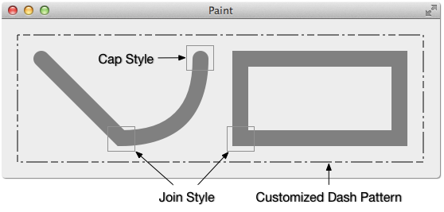
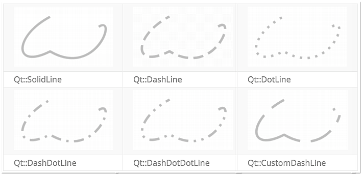
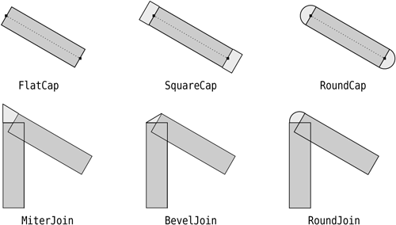
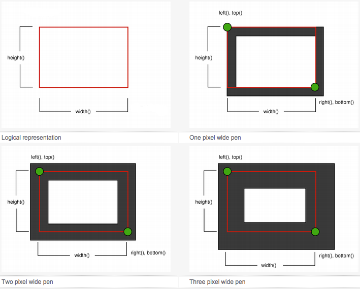
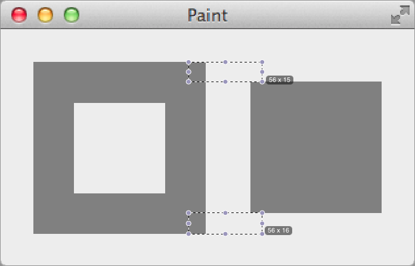
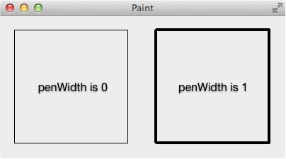

画笔 QPen 用来绘制轮廓，和画笔相关也有很多概念，要理解好画笔也需要下很多工夫的，先看个简单的例子，直观的理解一下什么是 Cap Style, Join Style, Pattern 等上图。:

1 2 3 4 5 6 7 8 9 10 11 12 13 14 15 16 17 18 19 20 21 22 23 24 25 void MainWidget::paintEvent (QPaintEvent *) QPainter painter (this ) ; painter.setRenderHint (QPainter::Antialiasing); painter.translate (50 , 50 ); QPainterPath path; path.lineTo (100 , 100 ); path.quadTo (200 , 100 , 200 , 0 ); QPen pen1 (Qt::darkGray, 20 , Qt::SolidLine, Qt::RoundCap, Qt::MiterJoin) ; painter.setPen (pen1); painter.drawPath (path); painter.drawRect (250 , 0 , 200 , 100 ); QPen pen2; QVector<qreal> dashes; qreal space = 4 ; dashes << 3 << space << 9 << space << 27 << space; pen2.setDashPattern (dashes); painter.translate (-30 , -30 ); painter.setPen (pen2); painter.drawRect (0 , 0 , 510 , 160 ); }
Pen Style 
Cap Style 和 Join Style 
画笔的宽和矩形的边框 其实我一直不明白设置画笔的宽度后，画出的矩形的边框是怎么计算的，是边框包围住整个图形还是边框整个在图形内部，直到看到下图时才明白（又是截图自 Qt 的帮助文档，里面真是包罗万象啊，希望大家多多阅读 Qt 的帮助文档），以矩形为例（逻辑上来说矩形是没有边框的）：

最终绘制出来的矩形的宽度为给定矩形的宽度加上画笔的宽度，高度为给定矩形的高度加上画笔的宽度，就用程序来验证上面的说法吧，放大程序的截图，就能看到各边边框的宽度：

1 2 3 4 5 6 7 8 9 10 11 12 13 14 15 16 void MainWidget::paintEvent (QPaintEvent *) QPainter painter (this ) ; painter.translate (40 , 40 ); painter.setPen (QPen (Qt::darkGray, 31 , Qt::SolidLine, Qt::SquareCap, Qt::MiterJoin)); painter.drawRect (0 , 0 , 100 , 100 ); painter.setPen (Qt::NoPen); painter.setBrush (Qt::darkGray); painter.drawRect (150 , 0 , 100 , 100 ); }
修饰画笔 如果把画笔的宽度设置为 0，是不是画出的图形的边框宽度就是 0，即看不到边框了呢？其实即使设置为 0，但是还是会有一个像素宽度的边框，只不过这个边框不会受 transformation 的影响，例如 scale，文档里是这么说的：
A line width of zero indicates a cosmetic pen. This means that the pen width is always drawn one pixel wide, independent of the transformation set on the painter.
宽度为 0 的画笔称为修饰画笔，当画笔的宽度设置为 0 和 1 在不使用 scale, shear 等 transform 的时候画出的边框看上去是一样的，都是 1 个像素，例如有 scale 的时候，缩放后宽为 0 的边框还是一个像素，宽为 1 的边框根据缩放比例进行缩放：

1 2 3 4 5 6 7 8 9 10 11 void MainWidget::paintEvent (QPaintEvent *) QPainter painter (this ) ; painter.translate (20 , 20 ); painter.scale (4 , 4 ); painter.setPen (QPen (Qt::black, 0 )); painter.drawRect (0 , 0 , 40 , 40 ); painter.setPen (QPen (Qt::black, 1 )); painter.drawRect (50 , 0 , 40 , 40 ); }